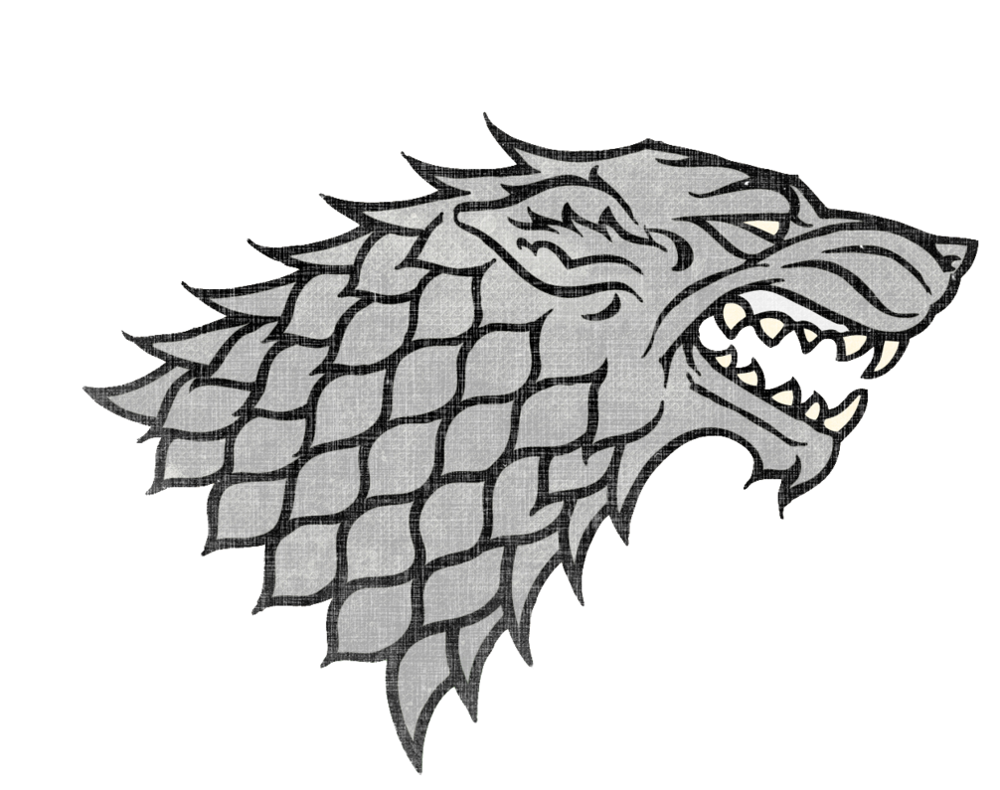

Welcome to my unofficial Game of thrones page. Be careful, may contain spoilers. The page is full of information about the battle of the five kings and include content of the 2nd and 3th book.

About me


Welcome to my unofficial Game of thrones page. Be careful, may contain spoilers. The page is full of information about the battle of the five kings and include content of the 2nd and 3th book.
Here are the three most important Houses in the war of Five Kings These three houses have potentially participated in big battles among them.


House Stark of Winterfell is a Great House of Westeros, ruling over the vast region known as the North and the Vale as Kings in the North from their seat in Winterfell, recently retaken by the Starks from House Bolton.

House Lannister of Casterly Rock is one of the Great Houses of Westeros, one of its richest and most powerful families and oldest dynasties. It is also the current royal house of the Seven Kingdoms following the extinction of House Baratheon of King's Landing.

House Baratheon's sigil is a black stag on a gold background and their house motto is "Ours is the Fury". When Robert ascended to the Iron Throne, a gold crown was added to the stag, denoting their status as the royal house.
Thats only a few battles of a great war, sorted by time:
A battle in the hills below the Golden Tooth is the opening battle of the War of the Five Kings and the Lannister campaign in the riverlands.

Not much is known much about the battle, but the attack seems to have been devastating. Ser Jaime Lannister, commanding the Lannister forces, descends on the outnumbered rivermen and breaks them. Lord Vance is slain during the fight and Lord Piper retreats back to Riverrun with the remnants of his forces, with Jaime following on his heels. Meanwhile, Tywin brings another Lannister army up from the south.
The battle on the Green Fork is an early battle in the War of the Five Kings and is the first to involve forces of House Stark. The battle occurs along the Green Fork of the River Trident in the riverlands.

The Stark army, commanded by Lord Roose Bolton, marches throughout the night in an effort to take the Lannister army by surprise. They arrive in the early morning and launch their attack. Tyrion Lannister observes the banners of Houses Hornwood, Karstark, Cerwyn, Glover, Frey, and Stark.
The battle in the Whispering Wood, often simply called the Whispering Wood after its forested setting, is a pivotal battle during the War of the Five Kings. The Stark victory relieves Riverrun while shattering one of the Lannister armies in the riverlands.

Jaime is captured, along with near a hundred knights and a dozen lords bannermen including: Lord Gawen Westerling, Lord Quenten Banefort, Ser Garth Greenfield, Lord Regenard Estren, Ser Tytos Brax, Mallor the Dornishman, Willem Lannister, and the Lannister cousins Cleos Frey and Tion Frey.
Renly's plan goes awry, however, when Stannis unexpectedly besieges Storm's End, forcing Renly to respond. Catelyn convinces the brothers to parley outside Storm's End, but Renly makes light of the situation, refusing to back down from his claim and advising his older brother to give up and eat a peach.
While preparing for battle with Stannis's forces the next dawn, Renly is slain by an animated shadow conjured by his brother's sorceress adviser, Melisandre. Ser Cortnay Penrose, the castellan of Storm's End, disbelieves that Renly has died, but his body goes missing before it can be presented as proof.
The Battle of the Blackwater is the largest battle in the War of the Five Kings. The battle is fought between forces loyal to Stannis Baratheon and those loyal to Joffrey Baratheon. Stannis's army is on the verge of winning a decisive victory by defeating the rather large garrison of King's Landing, but is taken by surprise and all but annihilated by the joint forces of Tywin Lannister and the Tyrells.
Despite Stannis Baratheon's survival, the battle is a major defeat for House Baratheon of Dragonstone, as he is able to retreat with only a fraction of his army and a token fleet to Dragonstone.
King Renly I Baratheon is a recurring character in the first and second seasons. He is played by guest star Gethin Anthony and debuts in "Lord Snow." Born to Steffon and Cassana Baratheon, Renly is the youngest of three brothers and thus fourth in line to inherit the throne after Joffrey, Tommen, and Stannis. He was granted the title of Lord Paramount of the Stormlands by his brother Robert, whose small council he also served on as Master of Laws, but abandoned the latter position when laying claim to the Iron Throne, styling himself as Renly of the House Baratheon, First of His Name, King of the Andals and the First Men, Lord of the Seven Kingdoms, and Protector of the Realm.

King Joffrey I Baratheon is a major character in the first, second, third, and fourth seasons. He is played by starring cast member Jack Gleeson and debuts in the series premiere. Though believed by most to be the eldest son of King Robert Baratheon and Queen Cersei Lannister, Joffrey is actually a bastard born from Cersei's incestuous relationship with her twin brother, Ser Jaime Lannister of the Kingsguard. He is the older brother of Myrcella Baratheon and Tommen Baratheon, both of whom share the same parentage with Cersei and Jaime Lannister.
Theon Greyjoy is a major character in the first, second, third, fourth, fifth, sixth and seventh seasons. He is played by starring cast member Alfie Allen and debuts in the series premiere. Theon is the only living son and heir of Lord Balon Greyjoy of the Iron Islands, and younger brother of Yara Greyjoy.
King Robb Stark is a major character in the first, second, and third seasons. He also appears in flashback form in the sixth season. He is played by starring cast member Richard Madden and debuts in the series premiere. Robb is the eldest son of Lord Eddard Stark of Winterfell and his wife, Lady Catelyn. He is the brother of Sansa, Arya, Bran, and Rickon Stark, and cousin (believed to be half-brother) of Jon Snow. He also adopts a direwolf named Grey Wind. Robb is declared the King in the North during the War of the Five Kings.
King Stannis I Baratheon is a major character in the second, third, fourth and fifth seasons. He is played by starring cast member Stephen Dillane, and debuts in "The North Remembers". Stannis is mentioned in the first season but did not appear. He is the Lord of Dragonstone, the younger brother of King Robert Baratheon and older brother of Renly Baratheon.